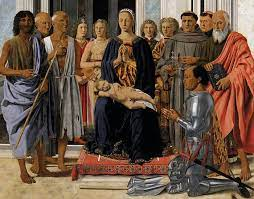

Il più perfetto esempio di corte umanistica è il palazzo Ducale eretto da Federico di Montefeltro nella piccola Urbino.
Con una lungimiranza veramente eccezionale, il duca ospita a Urbino letterati, umanisti, architetti e pittori di varie nazioni, ciascuno dei quali contribuisce ad un dialogo internazionale sull'arte di altissimo livello.
Su tutti spicca Piero Della Francesca che esegue opere destinate a diventare esempi assoluti, come Pala Montefeltro, oggi nella pinacoteca di Brera a Milano, modello insuperabile di sintesi prospettica di forma e di colore.
 Torna alla pagina di Federico da Montefeltro